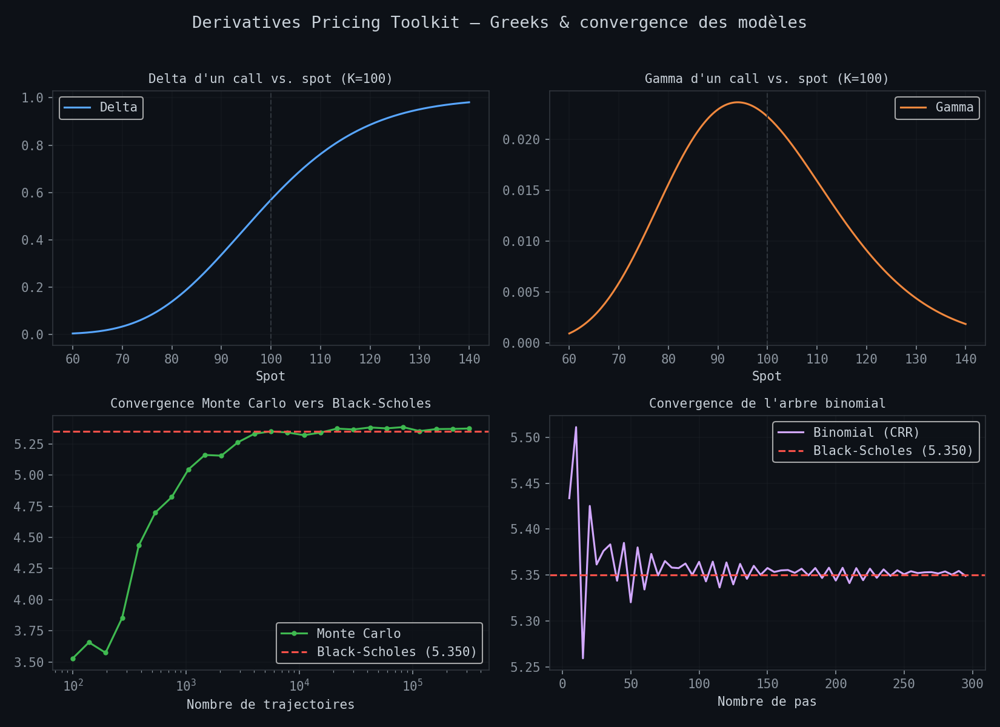
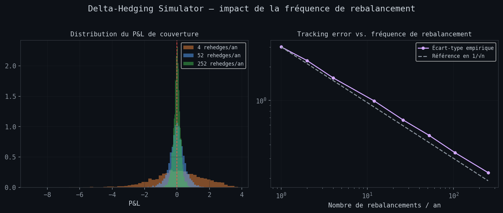

Finance student with hands-on experience in Société Générale's Forex & Money Market Middle Office and credit analysis at Banque de France. I build Python tools to understand — and show — how the models used on an options desk actually work.
Currently pursuing an MSc in Financial Markets and Investments at
SKEMA Business School (ranked 2nd worldwide by the Financial Times),
after a Bachelor's in Corporate Finance & Financial Markets at SKEMA Sophia-Antipolis and an exchange
year in China (Nanjing Audit School).
On the practical side: Middle Office Forex & Money Market Trading Support
at Société Générale (real-time Front Office support, pricing vanilla and complex transactions, VBA automation),
and Financial Analyst at Banque de France (solvency analysis, SME credit ratings).
That combination — desk work and credit analysis — is what pushed me to rebuild pricing models myself
instead of treating them as a black box.
Looking for a 6-month gap year internship in Capital Markets or Corporate Finance
starting August 2026.
Three continents, three very different pictures of finance — a contrast I've come to see as one of the more distinctive parts of my profile.
Left home young to learn English by immersion. Worked several student jobs — Uber Eats delivery, bartending — before landing an Accounting Assistant internship at TFE Hotel. Learned to be independent fast, and that fluency is built by necessity, not by choice.
My best experience abroad. A full exchange year at Nanjing Audit School, taking finance and management courses inside a Chinese university rather than as a visiting observer. It opened a real window onto Asia and gave me a genuine understanding of the culture — enough that I'm now learning Mandarin and seriously considering a future chapter of my career there.
The sharpest contrast on my CV. My MSc FMI is delivered at NC State University in partnership with SKEMA — ranked 2nd worldwide by the Financial Times — with a real possibility of a STEM designation. Several networking weekends in New York have already given me a first taste of US capital markets culture.

Vanilla option pricing library comparing three approaches: Black-Scholes (closed form + analytical Greeks), Monte Carlo with variance reduction, and a binomial tree for American-style pricing. Includes an implied volatility solver via Newton-Raphson.

Vectorized simulation of an option seller's P&L under dynamic delta hedging. Quantifies the hedging error (tracking error) as a function of rebalancing frequency, and shows the P&L impact of a gap between implied and realized volatility.
Natural next steps: calibrating a volatility surface from real market data, pricing barrier options, or backtesting a volatility strategy (straddle, strangle).
| Area | Detail | Level |
|---|---|---|
| FX/MM trading support | Transaction pricing, real-time Front Office support | |
| Derivatives pricing | Black-Scholes, Monte Carlo, binomial trees | |
| Credit analysis | Solvency, ratings, financial statement review | |
| Valuation | DCF, comparables, financial modelling | |
| Python / VBA | Automation, NumPy, Pandas, SciPy |
Open to opportunities in Capital Markets or Corporate Finance starting August 2026.